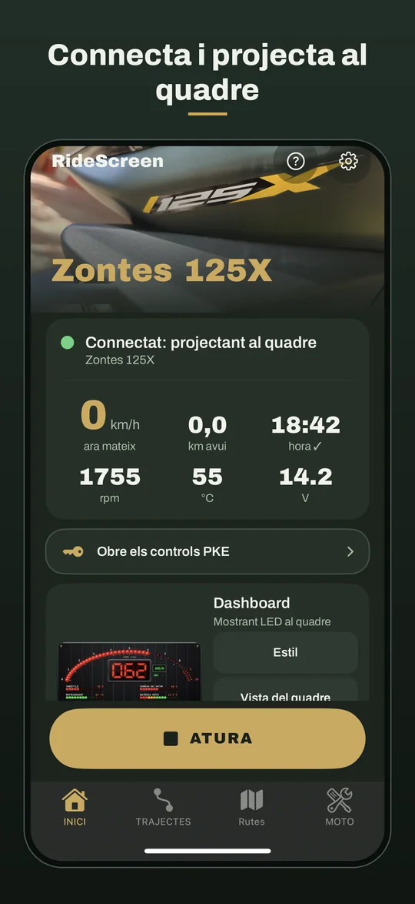
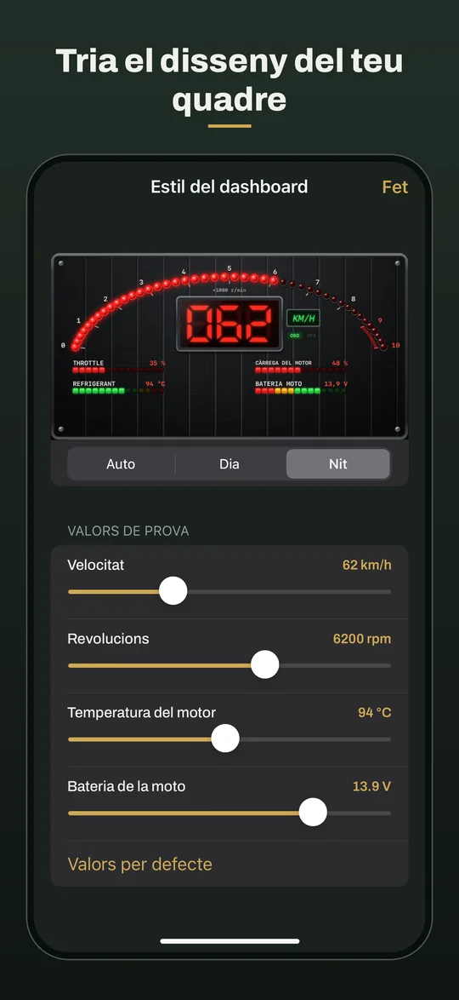
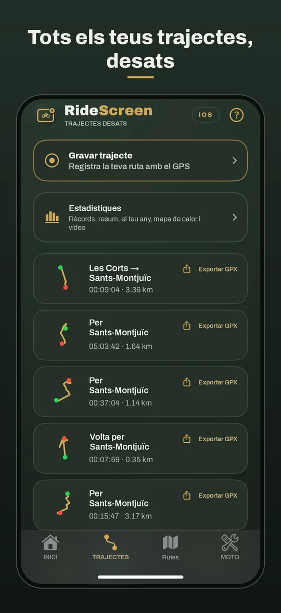
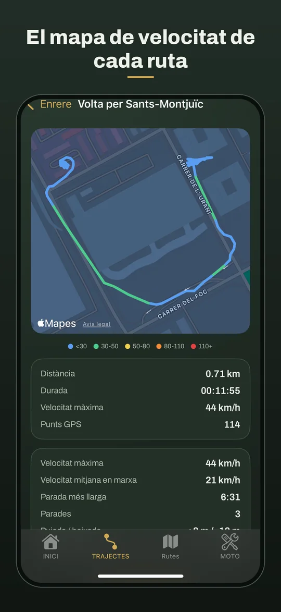
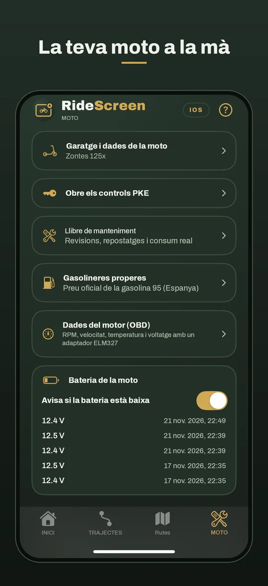

El mapa i les dades de la teva moto al seu quadre, amb l'iPhone bloquejat
RideScreen per a iPhone dibuixa el mapa, la navegació, la velocitat i les dades del motor a la pantalla de la teva moto, i ho continua fent amb el mòbil a la butxaca. Dissenys al teu gust, viatges amb rècords, clau sense contacte i molt més.
Gratis: prova de compatibilitat amb la teva moto · desbloqueig complet amb un únic pagament, sense subscripció · sense anuncis

Així es veu




Tot el que fa al teu iPhone
Mapa amb el mòbil bloquejat
Dibuixa el mapa d'Apple, la teva posició, el destí i la propera maniobra, i continua enviant-lo al quadre amb l'iPhone a la butxaca.
Deu dissenys del quadre
Mapa, net, LED, analògic, VFD, minimal, cockpit, Pit, Classic i Focus, en dia, nit o automàtic, amb marges ajustables.
La teva foto de fons
Posa una foto teva darrere de les dades, amb el vel que prefereixis, i veges el resultat abans de sortir.
Viatges i rècords
Grava les teves rutes amb el GPS, amb mapa de calor, rècords, trofeus i resums de la setmana i de l'any.
Rutes i GPX
Planifica una ruta, importa o exporta GPX i rep avisos per veu i de semàfors.
Dades del motor (OBD)
Amb un adaptador ELM327 per Bluetooth o Wi‑Fi: revolucions, temperatura i voltatge al quadre.
Clau sense contacte
Bloqueja, desbloqueja i obre el seient i el dipòsit des del mòbil. Escaneja el QR d'informació de la moto per configurar-ho.
Vídeo del viatge
Un clip teu amb la ruta, la velocitat i l'hora a sobre, en diversos estils.
Widgets i Siri
Controla la moto des de la pantalla d'inici o amb la veu, i rep avisos de manteniment, bateria i caigudes.
Funciona amb la meva moto?
Necessites una moto amb quadre TFT que mostri un codi QR per connectar el mòbil (MotoPlay / EasyConnect). L'app es prova cada dia en una Zontes 125X i també funciona a la Zontes 368M (quadre JCDZ34). Si el teu mostra aquest QR, prova-la: l'app et diu si és compatible.
Dues apps, una per sistema
| RideScreen AA (Android) | RideScreen (iPhone) | |
|---|---|---|
| Què fa | Posa Android Auto sense fils al quadre: Google Maps, Waze, música i l'Assistent. | Dibuixa la seva pròpia imatge al quadre: mapa d'Apple, navegació i dades de la moto. |
| Altres apps al quadre | Sí, les d'Android Auto. | No. Només el que és seu, per limitacions d'iOS. |
| Preu | Gratis, de codi obert. | Gratis, amb un desbloqueig únic a l'App Store. |
Tens Android? RideScreen AA és una altra app, gratuïta i de codi obert.
A punt en cinc minuts
Descarrega-la
Instal·la RideScreen des de l'App Store i obre l'app. Accepta els permisos de Bluetooth, xarxa local i càmera.
Emparella el quadre
Prem Connecta i escaneja el QR que mostra el quadre. Després prem «Uneix-te a la Wi‑Fi del quadre» i accepta l'avís d'iOS (una sola vegada).
Connecta
Prem Connecta. La imatge apareix al quadre, i l'app grava el viatge mentrestant. Després connecta sola.
Opcional: la clau
Als ajustos del PKE, escaneja el QR d'informació de la moto. Si la caixa no respon, afegeix la contrasenya Bluetooth de l'app oficial.
Preguntes freqüents
Quant costa?
L'app és gratuïta per una cosa: comprovar que serveix amb la teva moto. Emparella, connecta i el quadre mostra «La teva moto és compatible» amb la velocitat i l'hora. Per fer-la servir de debò (dissenys, mapa, OBD, clau, viatges, rutes, Siri…) hi ha el desbloqueig complet: un únic pagament, sense subscripció, vàlid a tots els teus dispositius amb el mateix Apple ID.
Puc fer servir Waze o Google Maps al quadre?
No. A l'iPhone l'app només pot dibuixar la seva pròpia imatge amb el mòbil bloquejat, i això es fa amb el mapa d'Apple. Pots enganxar un destí de Google Maps i el navega ella.
La clau sense contacte no respon
Si la caixa contesta però no obeeix, escriu als ajustos del PKE la contrasenya Bluetooth de 6 caràcters que vas posar en vincular la moto a l'app oficial. Deixa-la buida si ja et funciona.
Quines dades recull?
Els viatges i ajustos es queden al teu iPhone. No hi ha comptes ni anuncis. L'enviament de dades anònimes és opcional i mai inclou la teva ubicació. Tot és a la política de privadesa.
Alguna cosa no funciona
Ajustos → Dades anònimes i problemes → Informar d'un problema, o escriu a hola@ridescreen.app explicant la teva moto i què ha passat.